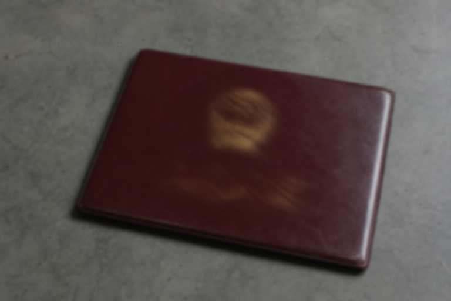

Xiwa accident Bereavement file — room contents

This room only registers money already processed and labor copies forwarded in. The evening-paper eight and the stele eight are not in the issue range. Anyone who comes with a Quota asking for an eighth share is stopped.
Contents, three pages: Bereavement issue base, Huo, Weng, Shang households only; Leave copy, Ning Guangfu 2011-12-09; relocation extract, Lan Shoutian, Yin Fulai.
A temp hire may copy. Issued pay cannot be changed. Gui Xiuying came. She did not want money. She wanted to see whether the Leave slip was still here. Fang Aju let her see it, and told her the incense sum on the ledger is not Bereavement.
Internal
Cover old. Nail rust. Cross-check Bereavement returns to this room. 24/39